Plugin Clases
El plugin de Clases es
parte de la solución UML+ para la realización de
diagramas según la especificación UML 2.0. Este diagrama
permite
modelar la interacción de las clases e interfaces describiendo la
semántica de las relaciones que se dan entre estas.
Los elementos propios que maneja este diagrama son:
- Clase
- Interface
- Interface Requerida
- Interface Proveida
- Puerto
- Sistema
- Dependencia
- Asociación
- Agregación
- Composición
- Generalización
- Realización
- Enlace
- Enlace a Puerto
Creación de un nuevo Diagrama de Clases.
Colosoft
soporta el Plugin Clases mediante la creación de un nuevo diagrama de
Clases.
Para la creación de un nuevo diagrama usando el Plugin se selecciona en
el Marco de Expresión: Nuevo, Diseñador de Software, Diagrama de Clases.
Se ingresan los datos correspondientes al diagrama
 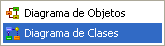
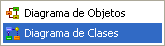
Figura 1. Creando diagrama de clases
Barra de herramientas del Plugin de Clases .
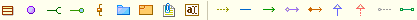
Figura 2. Barra de herramientas del plugin
Clase: Es el elemento clave de este diagrama, una clase representa un grupo de entidades que tienen un estado y comportamiento común. Para agregar una clase se selecciona el Icono Clase y luego se hace clic en alguna parte vacía del marco de Expresión.
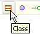
Figura 3. Botón de creación de clase
Aparecerá la ventana de creación de una clase.

Figura 4. Panel de creación de clases
Opcionalmente se pueden ingresar en los campos de estereotipo, autor y versión.
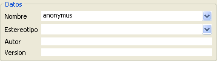
Figura 5. Datos básicos de creación
El artefacto de clase creado puede ser caracterizado de acuerdo con los perfiles disponibles.
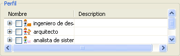
Figura 6. Perfiles disponibles para clases
Es posible ajustar las propiedades del contenedor de la clase (visible y editable).
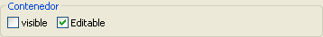
Figura 7. Propiedades del contenedor
Las clases ,además, pueden ser caracterizadas como hojas (si no pueden ser generalizadas) o abstractadas (requieren de otras clases para implementar sus operaciones).
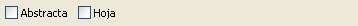
Figura 8. Caracterización de la clase
Las propiedades del elemento de grafo al igual que en el resto de los diagramas también se pueden editar.
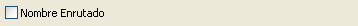
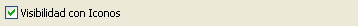
Figura 9. Propiedades del grafo
En la pestaña de atributos se encuentran los campos necesarios para agregar variables de diversos tipos a la clase recién creada.
En el primer apartado se introducen datos de Nombre de la variable, tipo que se puede escoger de entre Int, Char, boolean, etc. Un valor inicial y si se desea en dimensión se especifica el tamaño de arreglo si se desea crear.
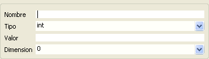
Figura 10. Atributos de la clase
En los siguientes grupos se puede establecer la visibilidad del nuevo atributo: Público, Protegido, Privado y de paquete. El tipo de Modificador: Transiente, Final, Volátil, Mutable. Y el Alcance: Clasificador o de Instancia.
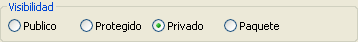
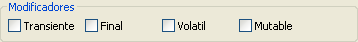

Figura 11. Propiedades de visibilidad, modificadores y alcance
En el Grupo Estructura se agregan las variables creadas a la estructura de la clase, también se pueden eliminar y cambiar el orden de estas. Set y Get permiten crear las operaciones de acceso correspondientes.
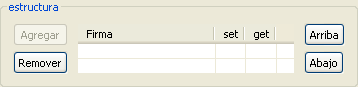
Figura 12. Estructura de la clase
En La pestaña de Operaciones de la clase pueden ser agregadas las operaciones pertenecientes a la nueva clase.
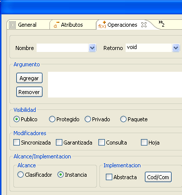
Figura 13. Operaciones de la clase
La Figura 14 muestra el nombre de la operación y el tipo del dato de retorno, los argumentos son agregados directamente y se despliegan en forma de lista.
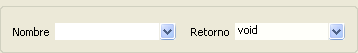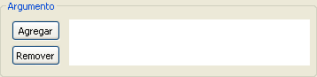
Figura 14. Agregando operaciones
La visibilidad de las operaciones puede ser seleccionada de entre Público, Protegido, privado o de Paquete. También el Alacance de Clasificador e Instancia y el tipo de implementación que puede ser Abstracta, Haciendo clic en el botón Cod/Com se puede agregar código de la operación.
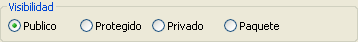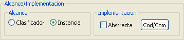
Figura 15. Propiedades de las operaciones
Adicionalemente se pueden agregar modificadores a la clase:
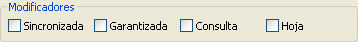
Figura 16. Modificadores para operaciones
El elemento gráfico de clase posee diversos iconos contextuales de expansión, como en los demas elementos gráficos de coloso estos iconos permiten crean nuevos artefactos desde y hacia la clase: Agregación, Composición, Generalización, Realización, interface requerida, interface proveída. También permiten agregar directamente atributos de la clase a operaciones.
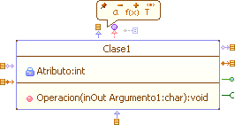
Figura 17. Representación de una clase
El elemento gráfico de la clase se puede redimencionar, seleccionando en su especificación, para contenedor "Visible" y "Editable".
Figura 18. Opciones del contenedor de una clase
Con estas opciones seleccionadas se puede redimencionar el elemento haciendo clic sostenido en sus esquinas y arrastrando el cursor según se desee.
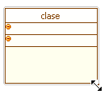
Figura 19. Representación de una clase
Interface: Contiene la declaración propiedades y metodos pero no su implementación, las hacen uso de esta mediante las realización si especifican la implementación de la interface, también se puede generalizar la interface si hacen uso de esta otras clases e inclusive otras interfaces.
Para agregar una clase se selecciona el Icono Interface y luego se hace clic en alguna parte vacía del marco de Expresión.
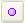
Figura 20. Icono de interface
La Figura 21 muestra la ventana de especificación de la interface. Al igual que con otros elementos el dato mínimo requerido para generar la interface es un nombre diferente de anonymus. Opcionalmente se pueden ingresar los campos de estereotipo, autor y versión, la interface se puede caracterizar con diferentes perfiles. Adicional a esto estan las propiedades comunes del contenedor y el elemento gráfico y la visibilidad de la interface con iconos.
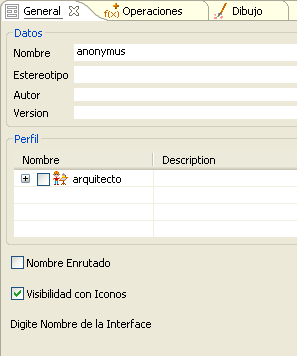
Figura 21. Propiedades generales de la interface
En esta misma ventana en la pestaña Operaciones se pueden agregar las operaciones que pertenezcan a la interface recien creada.
Los iconos contextuales de expansión del elemento Interface permiten crear generalizaciones desde y hacia la interface. Las realizaciones se crean separadamente hacia clases del diagrama.
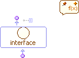
Figura 22. Representación de la interface
Interface Requerida: Otra forma de presentar interfaces es usando la forma Proveida/Requerida. Las clases e interfaces pueden especificar por medio de interfaces requeridas operaciones y servicios que otras clases implementan.
Para agregar una Interface requerida, se puede halar desde el icono de expansión de un elemento clase, también se puede hacer seleccionando el Icono Interface Requerida y luego se hace clic sostenido sobre un elemento clase o interface del marco de Expresión y luego se arrastrar el cursor sobre un espacio en blanco o sobre otra interface o interface proveida. Las interfaces requeridas no se pueden crear aisladamente.
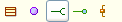
Figura 23. Botón de interface requerida
Seguido a la creación de la interface aparece la ventana de especificación de la interface, Al igual que con otros elementos el dato mínimo requerido para generar la interface requerida es un nombre diferente de anonymus. Opcionalmente se pueden ingresar los campos de estereotipo, autor y versión, la interface se puede caracterizar con diferentes perfiles. Adicional a esto estan las propiedades comunes del contenedor y el elemento gráfico y la visibilidad de la interface con iconos.
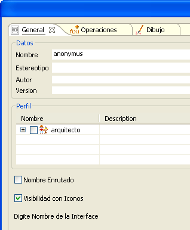
Figura 24. Propiedades de interface requerida
En esta misma ventana en la pestaña Operaciones se pueden agregar las operaciones que pertenezcan a la interface recien creada.
Los iconos contextuales de expansión del elemento Interface Requerida permiten crear generalizaciones desde y hacia la interface, las realizaciones se crean separadamente hacia clases del diagrama.
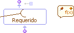
Figura 25 Representación de interface requerida
Interfaz Proveída: La forma complementaria de la interface requerida, es la Interface Proveída, las clases que implementan las operaciones estan asociadas a las interfaces proveidas que especifican estas operaciones.
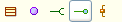
Figura 26. Botón de interfaz proveida
Para agregar una Interface Proveída, se puede halar desde el icono de expansión de un elemento clase, también se puede hacer seleccionando el Icono Interface Proveída y luego se hace clic sostenido sobre un elemento clase del marco de Expresión y luego se arrastrar el cursor sobre un espacio en blanco o sobre otra interface o interface Requerida. Las interfaces Proveídas no se pueden crear aisladamente.
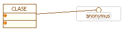
Figura 27. Interface proveída conectada a clase
Seguido a la creación de la interface aparece la ventana de especificación de la interface, Al igual que con otros elementos el dato mínimo requerido para generar la interface requerida es un nombre diferente de anonymus. Opcionalmente se pueden ingresar los campos de Estereotipo, autor y versión, la interface se puede caracterizar con diferentes perfiles. Adicional a esto estan las propiedades comunes del contenedor y el elemento gráfico y la visibilidad de la interface con iconos.
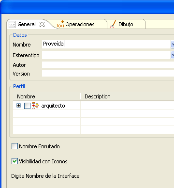
Figura 28. Propiedades de interface proveída
Los iconos contextuales de expansión del elemento Interface Proveida permiten crear generalizaciones desde y hacia la interface, las realizaciones se crean separadamente hacia clases del diagrama.
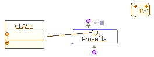
Figura 29. Representación de interface proveída
En el momento de la creación de interfaces Proveidas y Requeridas se pueden generar conexiones entre estas representando la existencia de un requerimiento que es a la vez implementado por otro elemento del diagrama. las interfaces proveidas y requeridas se pueden conectar entre sí o también pueden estar ligadas a elementos interface. las interfaces pueden estar conectadas en varios números permitiendo la multiplicidad en las implementaciones.
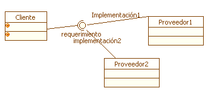
Figura 30. Múltiples conexiones a una interface proveída
Puertos: Los puertos permiten representar flujos de información con relación a las clases en el Diagrama de clases. Los puertos se crean necesariamente sobre algún otro elemento clase por lo que siempre nunca se pueden crear de forma independiente.
para crear un puerto se hace clic sobre el icono puerto y seguidamente se hace clic sobre un elemento clase del diagrama.
Figura 31.Boton de creación de puertos
Seguidamente aparece la ventana de especificación del nuevo puerto en donde solo es necesario cambiar el nombre único del puerto, ostras especificaciones como tipo de dato y valor estan disponibles así como la dimensión del arreglo si se desea.
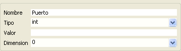
Figura 32. Propiedades básicas de puertos
Los modificadores del puerto permitidos se pueden escoger de entre: Hoja, Ordenada, Estática, Única, Derivada, Unión Derivada, Solo lectura.

Figura 33. Modificadores de puertos
La localización del puerto respecto del artefacto que lo contiene se puede ajustar para alterar su ubicación vertical y horizontal: Norte, Centrado o Sur; Occidente, Centrado, oriente.
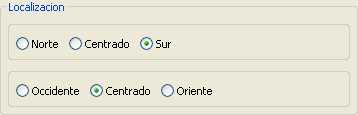
Figura 34. Localización de puertos
El componente gráfico del puerto se puede redimencionar haciendo clic sobre un puerto y arrastrando uno de sus extremos.
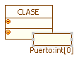
Figura 35. Redimensionando puerto
El uso de los puertos se hace conjuntamente con el uso de interfaces tanto proveidas como requeridas e interfaces simples.
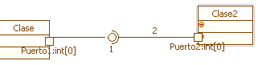
Figura 36. Conectando interface requerida y enlace a puerto
Los puertos también se comunican utilizando el "Enlace a Puerto". para esto se seleccionael icono "Puerto a Puerto".
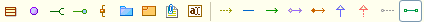
FIgura 37. Botón de creación de enlace puerto a puerto
Se hace clic sobre el primer puerto y luego se hace clic sobre el segundo puerto.
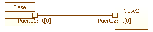
Figura 38. Conexión puerto a puerto
Relaciones: Las clases por si solas no proveen la información suficiente para entender como está diseñado un sistema, los diferentes tipos de relaciones en UML permiten establecer la semántica existente entre clases.
Roles: Los Roles permiten establecer atributos propios de las clases tanto cliente como proveedor dentro de las múltiples relaciones que se pueden generar entre estas. Dependiendo del tipo de relación se podrá editar o no ciertos atributos del rol.
La ventana de especificación de las relaciones, en general tiene los siguientes controles:
En la primera pestaña "Texto" se podrá escribir el nombre de la relación o estereotipo asociado que se esté especificando.
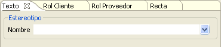
Figura 39. Estereotipo de rol
En la segunda pestaña "Rol Cliente" y en la tercer pestaña "Rol Proveedor" se especifican los atributos de la clase cliente o Proveedor (según la dirección de la relación) de acuerdo a los diferentes roles que estas puedan tomar en la relación.
Las características para los atributos de un rol son:
- Nombre: del Rol que lo diferenciará de los otros roles.
- Tipo: Por defecto será el de la clase Cliente/Proveedor aunque puede ser seleccionado de la lista deplegable.
- Valor: valor del atributo del rol.
- Multiplicad: permite establecer la cardinalidad de la relación estableciendo la cantidad de instancias de la clase que pueden participan en la relación.
- Generar Rol: al activar este control auntomaticamente se creará un nuevo rol con el nombre especificado.
Para editar un Rol existente se escribe en el campo Nombre el mismo asociado al rol que se quiere modificar.
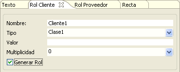
Figura 40. Rol de cliente
También es editable la visibilidad correspondiente al rol : Publico, Protegido o Privado.
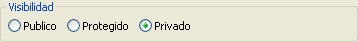
Figura 41. Visibilidad del rol
Los modificadores asociados al rol son los mismos que para los atributos: Transiente, Final, Volátil, Mutable. y su alcance Clasificador o Instancia.


Figura 42. Modificadores y alcance del rol
En el apartado Rol se listaran los diferentes atributos que han sido creados por los roles para la clase Cliente o Proveedor (respectivamente) dentro del diagrama y que pueden ser seleccionados (estar presentes como atributos de la clase).
*Nota este control está asociado a la Clase y no a la relación, por lo tanto los roles que se activen o desactiven afectaran a la clase directamente sin importar la relación desde la que se editen. Algunos roles no serán visibles en la lista dependiendo del tipo de relación a la que pertenecen.
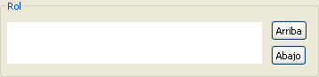
Figura 43. Nota del rol
Relación de Dependencia: representa el tipo de relación más débil entre clases, indica el uso o conocimiento de otra clase.
Para crear una nueva dependencia se hace clic sobre el icono Dependencia y luego se hace clic primero sobre la clase cliente o aquella que hace "uso" de otra clase , después se hace clic sobre la clase proveedora.
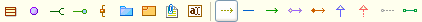
Figura 44. Botón de creación del rol de dependencia
Inmediatamente se abre la ventana de especificación de la nueva relación, desplegando la primera pestaña de Texto en la que se escribe el nombre correspondiente al estereotipo de la relación.
Las relaciones de dependencia permiten editar únicamente el nombre de los roles Cliente y Proveedor.
Las dependencias lucen como sigue, la clase 1 "hace uso" de la Clase2.
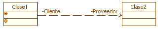
Figura 45. Dependencia entre clases
Las dependencias también se pueden dar desde una clase hacia cualquier tipo de interface y entre cualquier par de cualquier tipo de interface.
Relación de Asociación: Relación más fuerte que la Dependencia asociada a usos extendidos de tiempo de una clase por otra, se entiende como una relación "tiene".
Para crear una nueva dependencia se hace clic sobre el icono Asociación y luego se hace clic primero sobre una clase A o cliente y después se hace clic en una segunda clase B proveedor, para generar la asociación de tipo "A tiene un B".
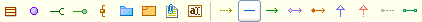
Figura 46. Botón de creación de relación de asociación
Aparece la ventana de especificación de la relación, desplegando la primera pestaña de Texto en la que se escribe el nombre correspondiente al estereotipo de la relación.
Las relaciones de Asociación permiten editar todas las características de los roles descritas previamente.
Las Asociaciones lucen como sigue, también se pueden ver los Roles creados en esta Asociación: rol1(Cliente) y rolA (Proveedor).
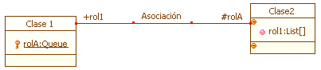
Figura 47. Etiquetas de roles en la relación de asociación
Las asociaciones también se pueden dar desde una clase hacia cualquier tipo de interface.
Asociaciones Unidireccionales: Cuando la navegavilidad de una asociación se da en una sola dirección (De A hacia B sin retorno) la línea de la asociación se decora con una flecha indicando la dirección correcta en la cual se da la relación.
Para crear una nueva relación se hace clic sobre el icono Asociación Unidireccional y luego se hace clic primero sobre la clase Cliente y seguidamente se hace clic en una segunda clase (Proveedor).
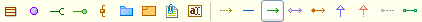
Figura 48. Botón de creación de asociación unidireccional
Es posible editar la especificación de la relación, desplegando la primera pestaña de Texto en la que se escribe el nombre correspondiente al estereotipo de la relación.
La asociación unidireccional permite establecer los nombres de Rol Cliente/Proveedor y editar las características únicamente del Rol Proveedor.
La Composición luce como sigue:
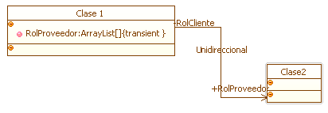
Figura 49. Representación de asociación unidireccional
Las asociaciones unidireccionales también se pueden dar desde una clase hacia cualquier tipo de interface.Agregación: Asocia clases que componen a otras clases mas generales denotando "pertenencia", Las relaciones de agregación se muestran por una punta de flecha con forma de diamante apuntando hacia la clase más general.
Para crear una nueva relación se hace clic sobre el icono Agregación y luego se hace clic primero sobre la clase Cliente (Más General) y después se hace clic en la segunda clase Proveedor (Más Especifica).
Figura 50. Botón de creación de agregación
Es posible modificar de especificación de la relación, desplegando la primera pestaña de Texto en la que se escribe el nombre correspondiente al estereotipo de la relación.
La agregación permite establecer los nombres de Rol Cliente/Proveedor y editar las características únicamente del Rol Proveedor.
La agregación luce como sigue:
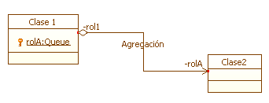
Figura 51. Representación de agregación
La agregación también se pueden dar desde una clase hacia cualquier tipo de interface.
Composición: Asocia clases que estan contenidas por clases mas generales denotando "Es Parte De", son mucho más fuertes que la agregación e implican que la instancia de la clase especifica es destruida si la instancia de la clase más general lo es. Las relaciones de agregación se muestran por una punta de flecha con forma de diamante relleno apuntando hacia la clase más general.
Para crear una nueva relación se hace clic sobre el icono Composición y luego se hace clic primero sobre la clase Cliente (Más General) y después se hace clic en la segunda clase Proveedor (Más Especifica).
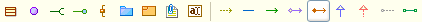
Figura 52. Botón de creación de composición
Es posible modificar la especificación de la relación, desplegando la primera pestaña de Texto en la que se escribe el nombre correspondiente al estereotipo de la relación.
La composición permite establecer los nombres de Rol Cliente/Proveedor y editar las características únicamente del Rol Proveedor.
La agregación luce como sigue:
Figura 53.Representación de composición
La composición también se pueden dar desde una clase hacia cualquier tipo de interface.
Generalización: Asocia interfaces y clases más generales o con menos detalles con otras que expanden la semántica de las anteriores (respectivamente) o que tienen un nivel de detalle mayor. Suelen estar asociadas a la connotación "Es Un".
Para crear una nueva generalización se hace clic sobre el icono Generalización y al hacer clic sobre la interface más específica y después sobre la interface más general.

Figura 54. Botón de creación de generalización
Aparece la ventana de especificación de la relación, desplegando la primera pestaña de texto en la que se escribe el nombre correspondiente al estereotipo de la relación.
La generalización no posee algún tipo de Rol bien sea Cliente o Proveedor.
La agregación luce como sigue:
Figura 55. Diferentes representaciones de una generalización
La Generalización no se puede crear desde clases hacia interfaces puesto que una clase no puede generalizar una interface.
Realización: Asocia clases que implementan las operaciones de las Interfaces, las interfaces establecen el contrato de los metodos y las operaciones y las clases que las realizan detallan como es la implementación. Una realización se muestra como una línea de trazos con una punta de flecha sólida que apunta a la interface.
Para crear una nueva realización se hace clic sobre el icono realización y luego se hace clic primero sobre la clase y después se hace clic en la interface.

Figura 56. Botón de creación de una realización
Es posible modificar la especificación de la relación, desplegando la primera pestaña de Texto en la que se escribe el nombre correspondiente al estereotipo de la relación.
La Realización no posee algún tipo de Rol bien sea Cliente o Proveedor.
La Realización luce como sigue:
Figura 57. Representación de una realización